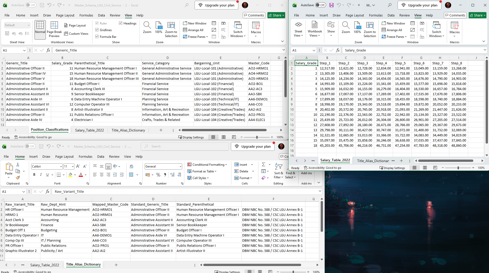
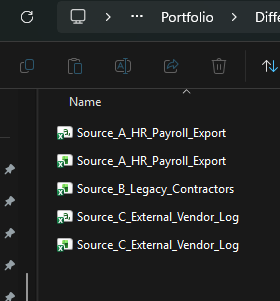
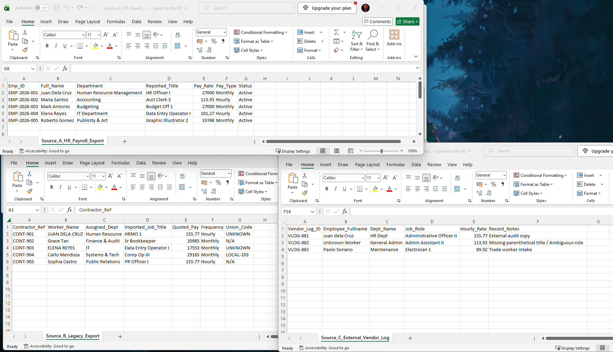
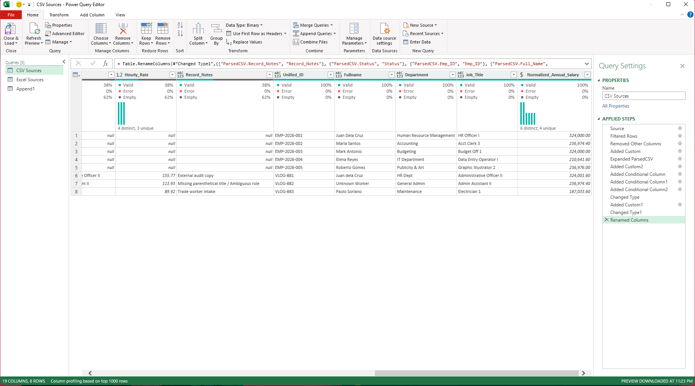
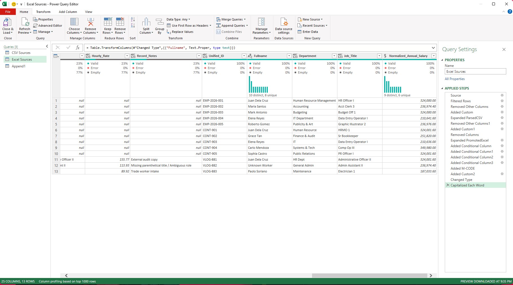
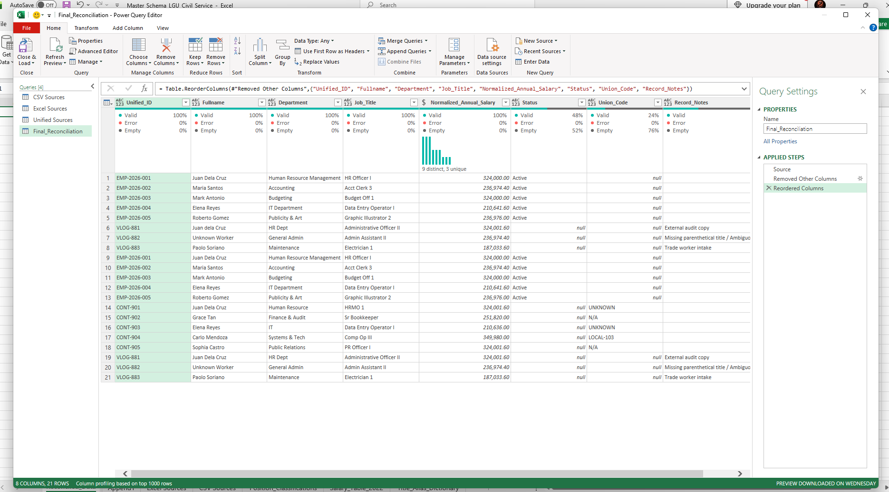
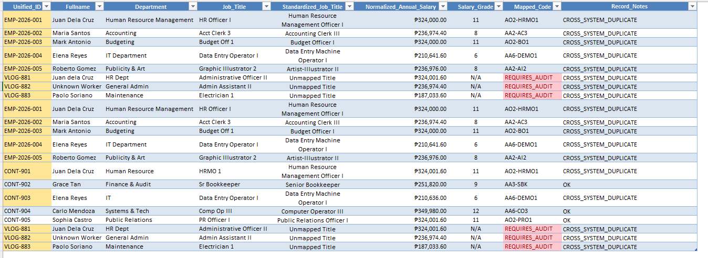

Public sector HR data often lives in disconnected CSV files, spreadsheets and internal logs. That fragmentation leads to payroll discrepancies, unmapped job titles and data lost during cleanup. This project builds an auditable intake pipeline for a Philippine Local Government Unit that fixes all three without deleting a single raw record.
XLOOKUP fallbacks, automated REQUIRES_AUDIT flags, whole-row duplicate tracking and standardized annual salaries.Four goals shaped every decision in the pipeline.
Combine CSV and Excel files with non-uniform columns into one staging environment while keeping raw lineage.
Map local payroll and job titles to DBM salary grades and CSC parenthetical classifications.
No destructive deletion. Cross-system duplicates and unmapped records stay visible for human compliance review.
Turn the calculation engine into a clean business report with conditional formatting and dynamic record notes.
The reasoning behind each technical choice.
Overlapping records across employee tables, contractor files and vendor logs keep distinct identifiers (EMP-, CONT-, VLOG-). A COUNTIF on names drives whole-row highlighting and a CROSS_SYSTEM_DUPLICATE note, so auditors can trace multi-system payouts without losing raw intake lineage.
Raw titles such as HR Officer 1, Acct Clerk 3 and Electrician 1 remain in the input column. A separate Standardized_Job_Title column holds the official parenthetical title, such as Human Resource Management Officer I, resolved through the mapped code.
Source files reported pay by the hour, month or year. Custom Power Query logic converts everything to Normalized_Annual_Salary so salary grade matching is consistent.
Soft yellow marks the ID with cross-system duplicates. Soft red marks single cells with unmapped roles. Reviewers see what needs attention without a wall of color.
Job classifications and salary steps follow official national standards.
Generic and parenthetical titles of positions in LGUs.
CSC Memorandum Circular No. 12, s. 2022
National salary grades and compensation steps.
DBM National Budget Circular No. 588

The data lifecycle from raw ingestion to the final report.
REQUIRES_AUDIT for unmapped or ambiguous rolesThe snippets that do the heavy lifting.
Header promotion that avoids structural errors when file layouts differ.
Table.PromoteHeaders(Csv.Document([Content], [Delimiter=",", QuoteStyle = QuoteStyle.Csv]))Hourly wages and monthly pay become one annual metric (2,080 hours per year, 12 months per year).
if [ParsedCSV.Hourly_Rate] <> null then [ParsedCSV.Hourly_Rate] * 2080
else if [ParsedCSV.Pay_Type] = "Monthly" then [ParsedCSV.Pay_Rate] * 12
else if [ParsedCSV.Pay_Type] = "Hourly" then [ParsedCSV.Pay_Rate] * 2080
else 0Strips the expansion prefix from merged column names.
#"Added M-CODE" = Table.TransformColumnNames(
#"Added Conditional Column3",
each if Text.StartsWith(_, "PromotedExcel.") then Text.AfterDelimiter(_, "PromotedExcel.") else _
)Fuzzy matching is unreliable for numeric and acronym variants such as "1" vs "I" or "HR Dept" vs "Human Resource Management". This chain checks the alias dictionary, falls back to the master classification table, then flags the row for human review.
=XLOOKUP(
[@[Job_Title]],
Title_Alias_Dictionary!B2:B10,
Title_Alias_Dictionary!A2:A10,
XLOOKUP(
[@[Job_Title]],
Position_Classifications!C2:C10,
Position_Classifications!F2:F10,
"REQUIRES_AUDIT",
0
),
0
)Once the mapped code is resolved, the official grade comes from the DBM schedule.
=XLOOKUP([@[Mapped_Code]],Table5[Master_Code],Table5[Salary_Grade],"N/A", 0)Select any screenshot to enlarge it.


EMP-, CONT-, VLOG-).


